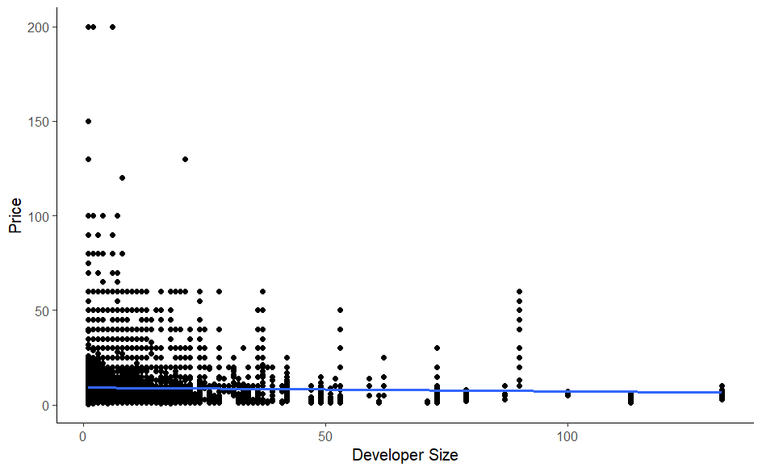
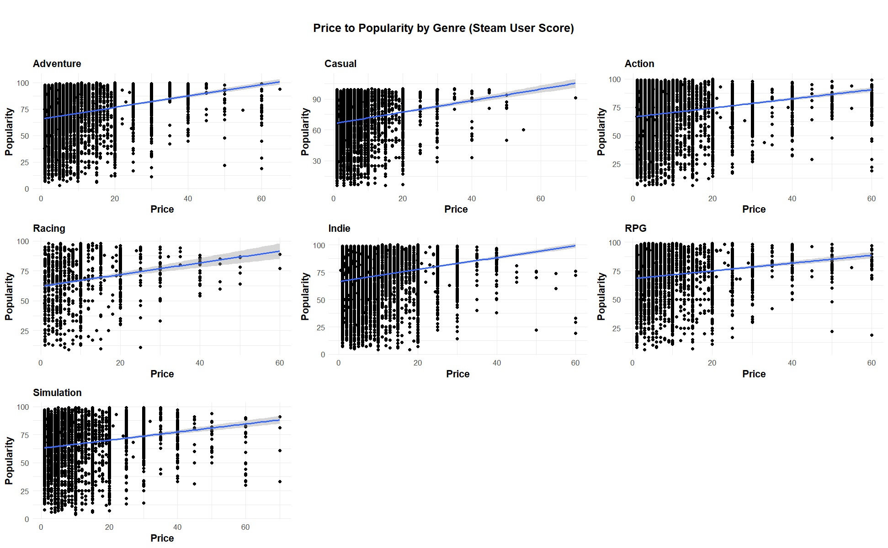
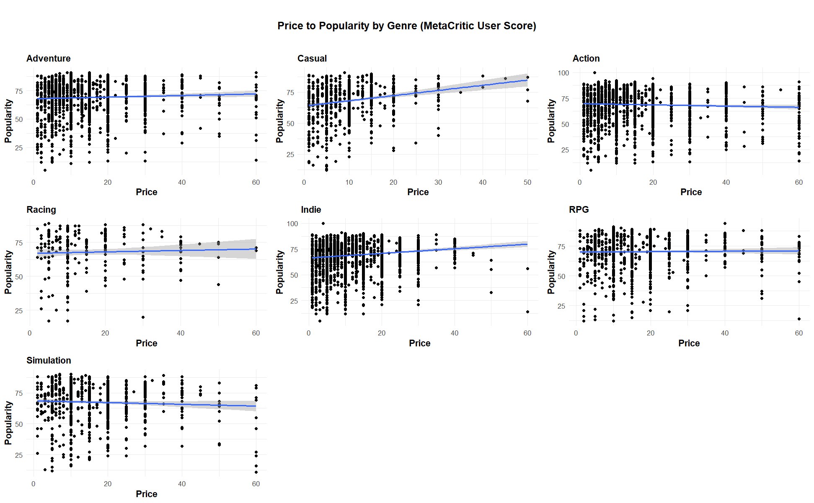
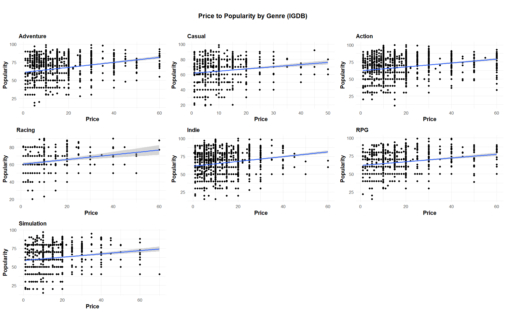

BlogPost
Video Game Popularity
Chris Lohmeier and Devinn Chi
Our project is focused on one of the largest sources of creative output of the 21st century: video games. Video games frequently employ detailed narratives, sophisticated and challenging gameplay, and can connect with profound elements of the human psyche. We’ve decided to look at trends in video games as a way to assess what draws people to particular games.
In large part, we’ve kept our exploration open-ended, but we’ve focused on the factors that influence the ratings and popularity of video games on Steam, one of the largest platforms for purchasing and playing video games, with an estimated 60% of total PC game revenue captured by the platform.*
We first were interested in any possible relationship between price and developer size. At first glance, however, a clear relationship is not apparent. However, it is interesting to note that there are relatively few large developers (measured by the number of Steam games published), which may warrant further investigation. It might be worthwhile to look at large developers and small developers separately.

Diving in deeper to the data, we decided to investigate price vs user ratings across three different websites. We chose to look closely at the ratings from users on Steam (of course), IGDB, and Metacritic. Each of these websites are highly active and have a large number of users. Our rationale was that different categories of games may inherently have higher development costs, or may be subject to different kinds of pressures from their users. Overall, we found a weak, positive relationship between price and popularity.
One possibility for this relationship existing at all, however, is the possibility that certain reviews might be manipulated. Developers of higher priced games might be under pressure to showcase a polished product, and for that reason might have bots add positive reviews of the product. This is one limitation of our analysis.
To go even further into our investigation, we decided to see if there exists any variation between genres for each of these three websites’ user ratings. For sake of eliminating edge cases, we decided to ignore any games that are more than $70, as there are very few.
Steam Ratings

MetaCritic

IGDB

After plotting and examining our results, we found that there is little correlation between user ratings and price of each video game. It looked like the ratings were more variable when observing the results from the Steam user ratings, and there was less correlation between price and user scores when looking at either Metacritic or IGDB. This is somewhat interesting due to the fact that Steam is the most popular of the three websites and this would hypothetically lead to more watered-down results. This might be because of manipulation, since Steam is the actual platform where users buy games and it would be more advantageous for developers to boost ratings on Steam.
Due to our lack of significant findings in our research so far, we hope to locate a dataset or more information, directly from the Steam API, that will help us discover more about how the size of developers influences user ratings, and also how the user ratings of cheap or expensive games change over time.
*https://venturebeat.com/games/video-game-insights-steam-pc-revenue-consolidation/